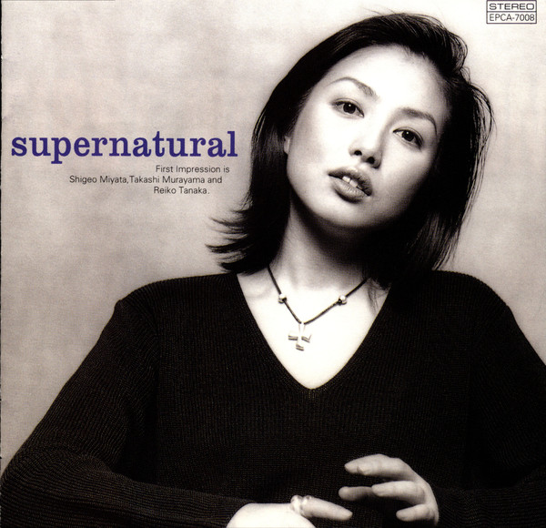

Day 72

First impression ◆ supernatural ◆ 1996
又一张 Xerf Xpec 老兄上传的 City Pop 精品。毫不惭愧地说，我从第一眼看到封面就被迷住了，主唱田仲玲子这张照片宛如女神再世——如此大方、自信、性感……酷！可能是因为好球区被无死角轰炸，写这篇文章的青年男性盯着这张封面看了又看，无法自拔。
当然，这张专辑远不只是封面惊艳，田仲玲子的演唱如封面一般大气洒脱，听起来十分舒畅。不仅如此，在不同单曲里，她的声音风格多变，时而充斥力量，时而克制轻柔。我尤其喜爱她的长音1，比如第一首「すべては終りからはじまるのさ」里的 “oh—baby”，第六首 Reach Out 里拖长的音调等等。啊，真是听不够！
supernatural 的配乐也相当精彩。我最喜欢的是它节奏灵动，听起来毫不呆板无聊；几首单曲里还用了手鼓，效果很棒。第九首「絆」的吉他 lick 和管弦声音抓人心神，我十分享受。
最后，这张专辑的整体效果也很棒，每首单曲都有明显不同的风格，听起来从头到尾都充斥着新鲜感！从这一首到下一首，乐器和人声时而放慢节奏，时而又重新加强力量，有时候又加入新的乐器、新的声音。总之，既多变新鲜又统一和谐。
City Pop 给我的感觉是会创造一个音乐的氛围，把我包裹进去，浸泡其中；特殊的感受通过周围包裹我的音乐之氛围传递给我。听这张专辑时，这样的感受格外强烈。
想要更多了解 First impression 的读者可以看看这篇文章：「First Impressionのsupernatural」。我的日语……还不支持我看懂这篇文章。
另外，第四首的和声听着好像 Sympathy for Devil 哦www
我想说 “adore”，但是中文想不出来对等的词。